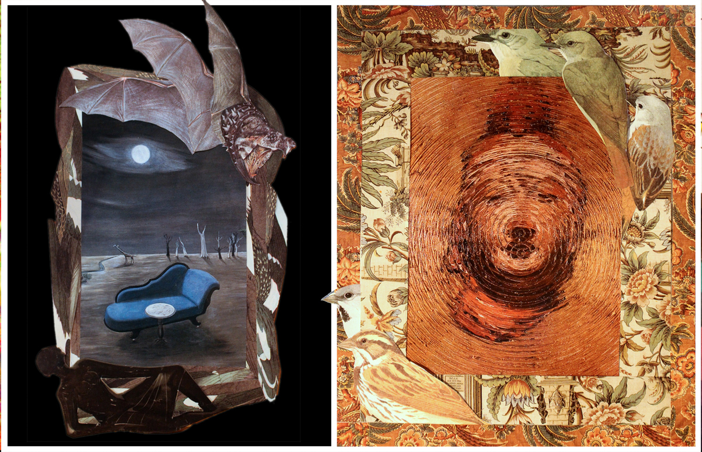

Pregnant Dog Howls at the Moon

Works from 2020, published 2023.
Poems collaged from other poems, nature guides, pregnancy magazines, and whatever else I rescued. This is one of my favorites.
Poems collaged from other poems, nature guides, pregnancy magazines, and whatever else I rescued. This is one of my favorites.